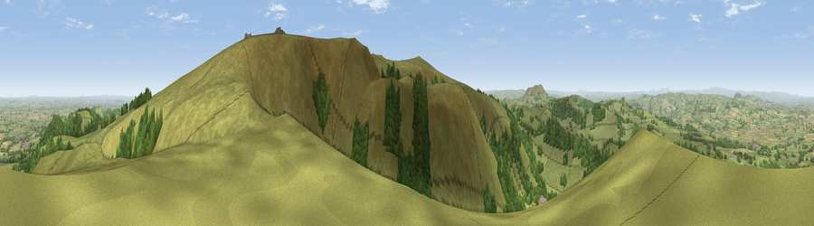

Viewpoint near Stiperstones
#2073 in England · top 4% of its area beats it · near StiperstonesThe view, rendered

A 360° render of this exact spot computed from the terrain model, tree cover and land cover — summer colours, afternoon light, calibrated against photographs of famous viewpoints. Real trees, hedges and buildings will differ in detail.
The panorama
Grey silhouette: terrain skyline in each direction (720 bearings, Earth curvature and refraction included). Dashed green: skyline with trees (+15 m) and buildings (+8 m) as obstacles. Blue strip: how far the ground is visible on each bearing.
Where the view opens
Wedge length = distance to the farthest visible ground on that bearing (vegetation-aware). Rings at 10, 25 and 50 km.
What fills the view
69% grassland · 27% woodland · 4% cropland
Angular shares of the visible panorama (visual magnitude), not map area. Landscape diversity 0.33 (0–1 Shannon).
Key numbers
More beautiful places nearby
The staircase of upgrades: each row has a higher view potential than everything closer. Driving times are estimates from straight-line distance, calibrated against real road routing — check an actual route before setting out.
| Place | Direction | Drive | Score |
|---|---|---|---|
| Viewpoint near Stiperstones | ESE · 1 km | ~3 min | 82.0 |
| Earl's Hill | NE · 6 km | ~12 min | 82.2 |
| Viewpoint near Asterton | SSE · 12 km | ~23 min | 83.0 |
| The Lawley | ESE · 13 km | ~24 min | 85.8 |
| Viewpoint near Little Wenlock | ENE · 27 km | ~43 min | 86.6 |
| North Hill | SE · 67 km | ~90 min | 86.8 |
| Worcestershire Beacon | SE · 68 km | ~91 min | 87.1 |
| Viewpoint near Bossington | SSW · 158 km | ~181 min | 88.3 |
52.60053, -2.93198 · source: screening · position refined by local search. Computed location — check access rights before visiting.